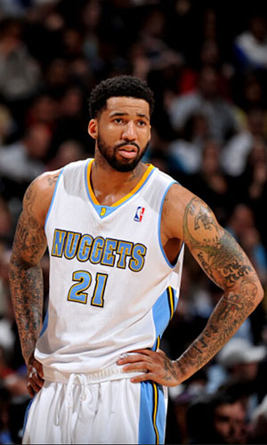

|  |
Матчи |
78 |
|
Передачи (всего/среднее) |
134 |
1.7 |
| В основе |
75 |
|
Подборы в защите (всего/среднее) |
379 |
4.9 |
| Время (всего/среднее) |
2471:07 |
31:41 |
Подборы в атаке (всего/среднее) |
96 |
1.2 |
| Очки (всего/среднее) |
1085 |
13.9 |
Подборы (всего/среднее) |
475 |
6.1 |
| 2-очковые броски (всего/среднее) |
279/569 |
3.6/7.3 |
Перехваты (всего/среднее) |
58 |
0.7 |
| 2-очковые броски (% реализации) |
49% |
|
Потери (всего/среднее) |
110 |
1.4 |
| 3-очковые броски (всего/среднее) |
139/406 |
1.8/5.2 |
Блокшоты (всего/среднее) |
29 |
0.4 |
| 3-очковые броски (% реализации) |
34.2% |
|
Блокшоты соперника (всего/среднее) |
48 |
0.6 |
| Штрафные броски (всего/среднее) |
110/142 |
1.4/1.8 |
Фолы (всего/среднее) |
231 |
3 |
| Уилсон Чендлер |
Штрафные броски (% реализации) |
77.5% |
|
Коэффициент полезности (всего/среднее) |
803 |
10.3 |